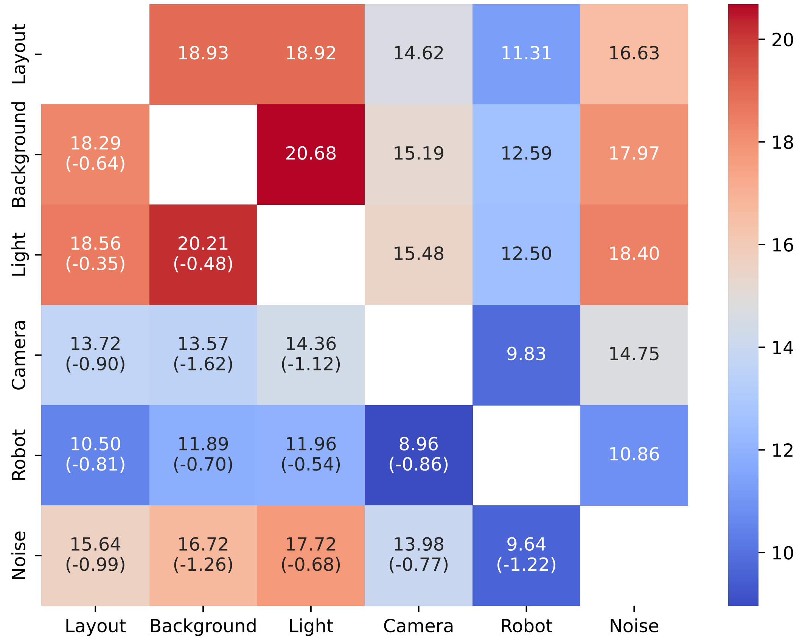

While single-dimension perturbations demonstrate some level of robustness, real-world scenarios often involve multiple simultaneous perturbations. We introduced the concept of Compositional Generalization Gap to quantitatively measure model performance under combined perturbations.
Below is the heatmap of conditional probabilities under pairwise perturbations. Upper triangular entries represent independence-based products of single-dimension probabilities, while lower triangular entries show actual joint outcomes.

Statistical Definition
We defined the Compositionality Gap as the covariance between perturbation variables given successful outcomes:
Where:
- \(D_i, D_j\): Indicator variables for applying perturbations
- \(Y\): Success indicator variable
- \(\Delta_{ij} < 0\) indicates negative interaction between perturbations
Negative Interaction Effects
Our experiments revealed consistent negative compositionality gaps, showing that:
- Co-occurring perturbations act as coupled noise sources
- Performance degradation is multiplicative rather than additive
- Models lack mechanisms to capture higher-order dependencies
Conclusion: Current VLA models lack compositional generalization capabilities. Their learned representations are entangled and cannot handle the complex, multi-dimensional perturbations that characterize real-world environments.